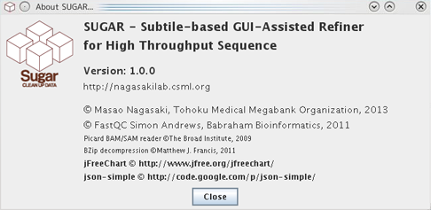

The SUGAR is a GUI-based software to perform a detailed quality evaluation and cleaning of the Illumina high throughput sequencing data. It generates heatmap plots and line graphs of base-calling quality value (QV), read density, and mapping quality (MapQ; optional) score of sequence reads considering structures of the Illumina flowcells. Based on the results of the quality assessments by the SUGAR, the users can conduct both manual and automated data cleaning using GUI-based operations.

Current version of the SUGAR supports flowcells of the HiSeq2500 High Output mode (HCS 2.0.05), Rapid Run mode (HCS 2.0.x), and MiSeq v2 (Flow Cell v2). The SUGAR is developed initially as an extended version of the open source quality-control software FastQC (URL: http://www.bioinformatics.babraham.ac.uk/projects/fastqc/), and is freely available under GNU GPL v3 license at the URL http://nagasakilab.csml.org/xxx.
Last revision of the software and help file: October 14, 2013